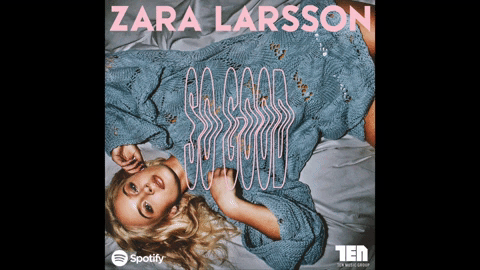
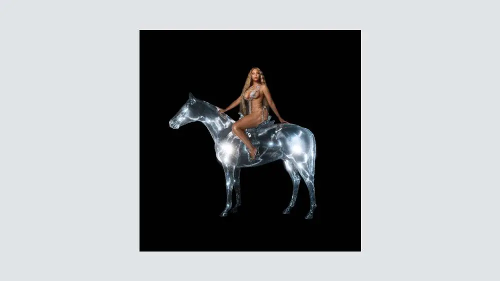
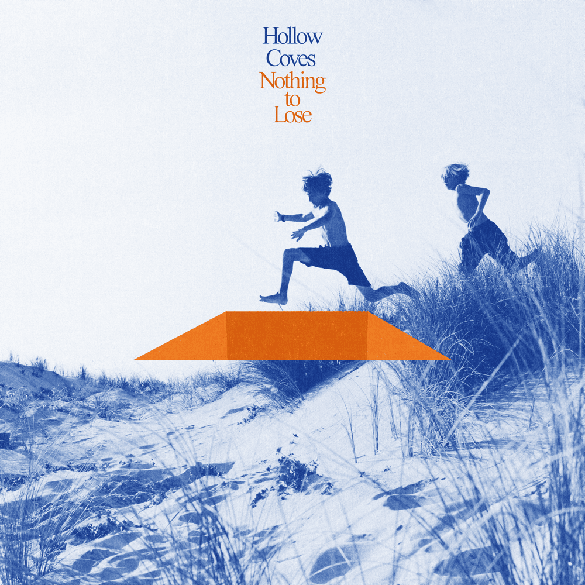

Ludwig Kronstrand
Axel Liljefors Jansson
Dante Lindhe

Sonny Fahlberg
Matt Carins

Phil Rudd
Cliff Williams
Brians Johnson
Stevie Young
| Artist/Band | Album | Omslag | Medlemmar | Nationalitet | Källa |
|---|---|---|---|---|---|
| Zara Larsson | So Good |  | Zara Larsson | Sverige | Källa |
| Hov1 | Barn av vår tid | |
Noel Flike Ludwig Kronstrand Axel Liljefors Jansson Dante Lindhe |
Sverige | Källa |
| Avicii | Tim | |
Tim Bergling | Sverige | Källa |
| Norlie & KKV | Se på oss | Ken Kim Vadenhag Sonny Fahlberg |
Sverige | Källa | |
| Usher | Confessions 2 | Usher Raymond IV | USA | Källa | |
| Eminem | The Marshall Mathers LP2 | Marshall Bruce Mathers III | USA | Källa | |
| 50 cent | Animal Ambition | Curtis James Jackson III | USA | Källa | |
| Beyonce | Renaissance |  | Beyoncé Giselle Knowles | USA | Källa |
| Hollow Coves | Nothing to lose |  | Ryan Henderson Matt Carins |
Australien | Källa |
| AC/DC | Power Up | |
Angus Young Phil Rudd Cliff Williams Brians Johnson Stevie Young |
Australien | Källa |